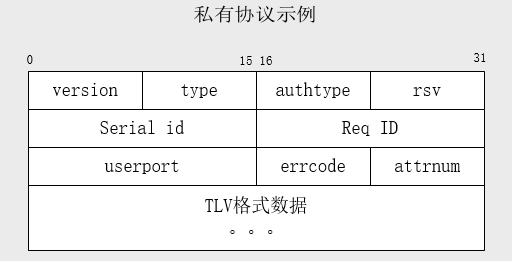

WireShark 插件开发
通常我们再项目开发中会定义私有的协议，当通过wireshark查看网络数据包时，如果能够 按照我们协议的格式进行显示，并明确显示协议每一位的含义，那将会是很愉快的一件事情， 而不需要再去看网络数据晦涩的二进制。
下面举例介绍一下 WireShark插件 的开发方法，带你装逼带你飞~~
第一步
想要开发协议插件，首先你要对所开发的协议十分的了解才行。举个例子，下面是我这边的一个私有协议
协议格式

协议字段说明
- versions : 协议版本，1字节，取值 0 或者 1
- type : 消息类型，1字节
- [1] : Challenge-Request
- [2] : Challenge-Ack
- [3] : Auth-Request
- [4] : Auth-Ack
- [5] : Logout-Request
- [6] : Logout Ack
- [7] : Auth-AFF-Ack
- [8] : NTF-Logout-Request
- [9] : Ask-Info-Request
- [10] : Ask-Info-Ack
- [14] : NTF-Logout-Ack
- authtype : 认证类型，1字节